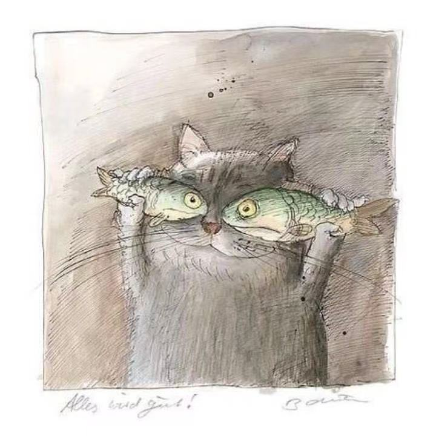

|
Xueyang Yu I am a first year Master student at University of Massachusetts Amherst, working with Prof. Chuang Gan. Previously, I received my bachelor's degree in Computer Science from ShanghaiTech University under the supervision of Prof. Xuming He. I was also fortunate to be mentored by Prof. Yu-xiong Wang at UIUC and Dr. Yossi Gandelsman at BAIR during my undergraduate.
I am actively seeking for 26/27 fall PhD opportunities in Multiodal Models and Embodied AI. Feel free to chat with me if you are interested! Email / Google Scholar / Twitter / Github / WeChat |
 |
{kind=link}
{kind=link}
News
|
Research
I am broadly interested in multi-modal foundation models and spatial intelligence. Currently, I focus on exploring effective multimodal reasoning chains and building models that can reason about dynamics in 2D/3D environments. Reach out if you want to discuss research projects, collaborations or anything else!
|

|
TalkCuts: A Large-Scale Dataset for Multi-Shot Human Speech Video Generation
Jiaben Chen‡, Zixin Wang‡, Ailing Zeng, Yang Fu, Xueyang Yu , Siyuan Cen, Julian Tanke, Yihang Chen, Koichi Saito, Yuki Mitsufuji, and Chuang Gan NeurIPS 2025 Project | Paper | Code We present TalkCuts, a large-scale benchmark dataset designed to facilitate the study of multi-shot human speech video generation. |
|
Machine Mental Imagery: Empower Multimodal Reasoning with Latent Visual Tokens
Zeyuan Yang‡, Xueyang Yu‡, Delin Chen, Maohao Shen, Chuang Gan In submission, 2025 ICCV 2025, KnowledgeMR workshop (Best Paper) Project | Paper | Code We propose Mirage, interleaving latent visual tokens, which represent compact imagery visual features, with explicit text tokens to solve diverse multimodal reasoning tasks, boosting the reasoning performance without the full pixel-level image generation. |
|

|
VCA: Video Curious Agent for Long Video Understanding
Zeyuan Yang‡, Delin Chen‡, Xueyang Yu, Maohao Shen, Chuang Gan ICCV 2025 Project | Paper We introduce VCA, a curiosity-driven video agent with self-exploration capability, which autonomously navigates video segments and efficiently builds a comprehensive understanding of complex video sequences. |
|
GLUS: Global-Local Reasoning Unified into A Single Large Language Model for Video Segmentation
Lang Lin‡, Xueyang Yu‡, Ziqi Pang‡, Yu-xiong Wang CVPR 2025 Project | Paper | Code We propose a simple yet effective MLLMs for language-instructed video segmentation. It emphasizes global-local video understanding and achieves SOTA performance on multiple benchmarks. |
|

|
Learning Video Representations
without Natural Videos
Xueyang Yu, Xinlei Chen, Yossi Gandelsman ICCV 2025, LIMIT workshop Project | Paper | Code We show that synthetic videos and natural images can replace real videos for pre-training, achieving comparable or better performance while offering a controllable, transparent alternative. |
Service |
|
| üé¨ ü•É ‚úàÔ∏è üèÄ üç≥ |